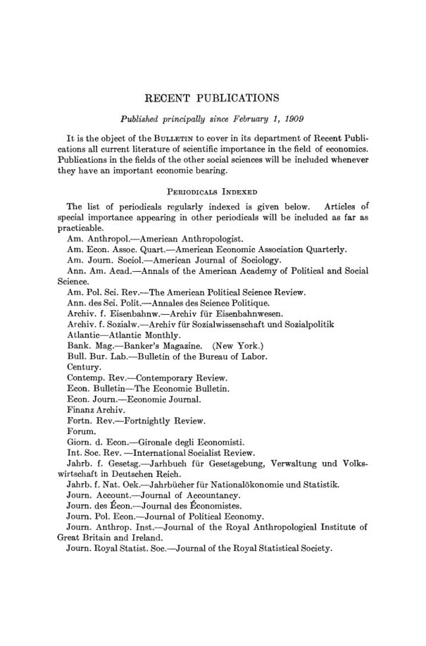

O Bulletin de junho de 1909: desemprego, salários e estatística
Leitura: 4 min
Notas sobre os 25 anos da associação e a morte de Carroll D. Wright, 33 resenhas com peso para estatística, seguro e trabalho, e a bibliografia corrente desde fevereiro de 1909.


A primeira nota do número de junho de 1909 anuncia a celebração dos 25 anos da American Economic Association, em Nova York, nas férias de Natal, junto com a dos historiadores. O presidente dos Estados Unidos participaria da abertura. Seligman presidia a comissão organizadora, com Lindsay como vice.
O que contavam as notas?
Nomeações dominam. Warren B. Catlin e Walter A. Lagerquist, doutores de 1909, tornam-se instrutores em Cornell; os dois estavam na lista de teses de abril. H. L. Moore deixa o Barnard College para concluir um grande trabalho de teoria econômica e estatística. William G. Sumner se aposenta em Yale, onde ensinava desde 1872.
Uma associação japonesa, fundada em 1908 para traduzir obras ocidentais, publicou Ely e Le Rossignol. Lausanne celebraria o 75º aniversário de Walras em 10 de junho.
O obituário mais longo é o de Carroll Davidson Wright, presidente do Clark College, morto em 20 de fevereiro de 1909. Em 1873 assumiu o novo escritório de estatísticas do trabalho de Massachusetts; em 1885 tornou-se comissário do Trabalho dos Estados Unidos, cargo que exerceu por vinte anos. Também concluiu o 11º censo.
Que livros foram resenhados?
São 33 resenhas, algumas sobre dois livros. Na teoria, T. N. Carver resenha a terceira edição dos Principles of Economics de Seligman, o manual de Adolphe Landry e o curso resumido de Henry Rogers Seager. A história econômica traz os dois volumes de George Louis Beer sobre o sistema colonial britânico e a história do trabalhador agrícola inglês.
Trabalho e seguro formam o bloco central. Irene Osgood resenha o livro de W. H. Beveridge sobre desemprego, que propõe organizar o mercado de trabalho por meio de bolsas de trabalho. John R. Commons resenha o estudo de James B. Kennedy sobre os benefícios sindicais, outro nome da lista de abril, e um comentário à lei britânica de compensação de acidentes de 1906. Maurice H. Robinson compara dois livros, um sobre seguro estatal e outro sobre seguro-desemprego.
Na síntese de Irene Osgood: “O problema a estudar, portanto, não é o desempregado, mas o desemprego.” (The problem to be studied, then, is not the unemployed but unemployment.)
A estatística tem peso incomum. Wesley C. Mitchell resenha o levantamento de R. Kuczynski sobre os salários industriais alemães desde a unificação, que não combina os dados das indústrias em índices gerais. Warren Milton Persons resenha o tratado de Franz Zizek sobre médias estatísticas; William B. Bailey, quatro trabalhos, de suicídio na Bélgica a um anuário de estatística.
Na resenha de Zizek, Persons lembra que Guerry, Edgeworth e Bowley definem a estatística como “a ciência das médias”. (the science of averages)
Fecham o bloco sociologia e governo, de McDougall e Cooley ao governo municipal de L. S. Rowe e às comunidades icarianas de Étienne Cabet.
Como se organizava a bibliografia?
A seção Recent Publications cobre obras publicadas principalmente desde 1º de fevereiro de 1909. Mantém a divisão em 18 seções numeradas, com livros e artigos separados.
Na minha leitura
Na minha leitura, o número de junho de 1909 registra a passagem do desemprego de problema de assistência para problema de mercado. A pergunta deixa de ser como socorrer quem está sem trabalho e passa a ser por que o mercado o deixa sem emprego; a resposta é organizacional: reservas de mão de obra dispersas, trabalho eventual, falta de informação. O seguro segue o mesmo caminho e vira desenho institucional: quem paga, e em que escala.
O levantamento de Kuczynski mostra o cuidado de método que acompanha essa mudança. Dados fragmentários aparecem tabela por tabela, sem um índice geral que esconda as lacunas.
Glossário
- Bolsa de trabalho
- agência que reúne ofertas de emprego e trabalhadores disponíveis; em inglês, labour exchange.
- Tributação progressiva
- sistema em que a alíquota cresce com a base tributável, como a renda ou a herança.
- Empréstimo sobre salário
- crédito garantido pela cessão de salários a receber; em inglês, salary loan.
Artigos desta edição
- Personal and Miscellaneous Notes — editores (pp. 109–118). Notas sobre a celebração dos 25 anos da associação, clubes econômicos, nomeações, congressos e publicações, e o obituário de Carroll Davidson Wright. JSTOR
- Edwin R. A. Seligman, Principles of Economics, 3ª ed. — T. N. Carver (pp. 119–121). Tratado geral organizado em torno da vida econômica, dividido entre seus elementos e sua estrutura e processos, com 140 páginas sobre moeda e crédito. JSTOR
- Adolphe Landry, Manuel d'économique — T. N. Carver (pp. 121–122). Manual para as faculdades de direito, com introdução sobre o método e as relações da economia com a tecnologia, a psicologia e o direito, e uma longa exposição da teoria dos juros. JSTOR
- Henry Rogers Seager, Economics, Briefer Course — T. N. Carver (pp. 122–123). Versão resumida da Introduction to Economics do autor, voltada a escolas técnicas e profissionais, do consumo e do valor à distribuição e a problemas práticos. JSTOR
- George Louis Beer, The Origins of the British Colonial System, 1578-1660; British Colonial Policy, 1756-1765 — Charles H. Hull (pp. 123–125). Primeiro e último volumes de uma série sobre o sistema colonial britânico até as vésperas da Revolução Americana, com capítulos sobre emigração, tabaco, comércio e o comércio colonial com o inimigo na Guerra Franco-Indígena. JSTOR
- James M. Swank, Progressive Pennsylvania — Ernest Ludlow Bogart (pp. 125–126). História industrial da Pensilvânia, com ênfase nos sistemas de transporte e nas indústrias de ferro e aço, escrita pelo secretário da American Iron and Steel Association. JSTOR
- W. Hasbash, A History of the English Agricultural Laborer — John Lee Coulter (pp. 126–128). História do trabalhador agrícola inglês até 1907, da conquista da liberdade pessoal à perda do vínculo com a terra, com prefácio de Sidney Webb. JSTOR
- C. F. Carter, When Railroads Were New — Ernest Ludlow Bogart (pp. 128–129). Relato popular da construção de grandes ferrovias, do Baltimore and Ohio ao Canadian Pacific, centrado nas obras de engenharia e nos pioneiros. JSTOR
- Robert C. Clark, The Beginnings of Texas, 1684-1718 — Ernest Ludlow Bogart (pp. 129). Monografia sobre as primeiras ocupações espanholas no Texas e a disputa com os franceses, até a fundação de San Antonio. JSTOR
- William H. Fry, New Hampshire as a Royal Province; Edwin P. Tanner, The Province of New Jersey, 1664-1738 — J. P. Bretz (pp. 130–132). Resenha conjunta de dois estudos de Columbia sobre governo, sistema de terras e finanças coloniais, incluindo as emissões de bills of credit. JSTOR
- Rollin E. Smith, Wheat Fields and Markets of the World — John Lee Coulter (pp. 132–133). Estudo da produção de trigo nos principais países e de sua comercialização, com mais de cem páginas sobre bolsas de cereais e câmaras de comércio. JSTOR
- J. Russell Smith, The Ocean Carrier — L. C. Marshall (pp. 133–135). Estudo econômico do transporte marítimo em duas partes, a evolução do serviço e das linhas regulares e a formação dos fretes e dos acordos de tarifas. JSTOR
- Addison B. Burk (ed.), Proceedings of the First Annual Convention of the Atlantic Deeper Waterways Association; Chester Lloyd Jones, The Economic History of the Anthracite-Tidewater Canals — Frank Haigh Dixon (pp. 135–137). Resenha conjunta dos anais de uma convenção pela hidrovia costeira do Maine a Key West e de uma história dos canais do carvão antracito e de sua competição com as ferrovias. JSTOR
- William Morse Cole, Accounts: Their Construction and Interpretation — Frederick A. Cleveland (pp. 137–139). Livro-texto universitário em duas partes, princípios de escrituração e princípios de contabilidade, com capítulos sobre capital e receita, depreciação, balanço e capitalização. JSTOR
- James B. Kennedy, Beneficiary Features of American Trade Unions — John R. Commons (pp. 140–141). Estudo dos benefícios mantidos pelos sindicatos nacionais americanos, com a história dividida em três períodos, até 1830, de 1830 a 1880 e depois de 1880. JSTOR
- W. H. Beveridge, Unemployment: A Problem of Industry — Irene Osgood (pp. 141–144). Análise do desemprego como desajuste entre oferta e demanda de trabalho, com o caso das docas de Londres e a proposta de organizar o mercado por meio de bolsas de trabalho. JSTOR
- V. R. Aronson, The Workman's Compensation Act, 1906 — John R. Commons (pp. 144–145). Exame, seção por seção, da lei britânica de compensação de acidentes de trabalho de 1906 comparada à de 1897, com os textos legais, regulamentos e formulários em apêndice. JSTOR
- Clarence W. Wassam, The Salary Loan Business in New York City — E. W. Kemmerer (pp. 146–148). Relatório do Bureau of Social Research sobre empréstimos garantidos por cessão de salário em Nova York: contratos, encargos, publicidade, cobrança e propostas de regulação. JSTOR
- Edwin R. A. Seligman, Progressive Taxation in Theory and Practice, 2ª ed. — Carl C. Plehn (pp. 149–150). Segunda edição, revista e ampliada, do estudo sobre história, teoria e aplicação do princípio progressivo, com parte histórica cerca de duas vezes maior. JSTOR
- R. Kuczynski, Die Entwicklung der gewerblichen Löhne seit der Begründung des Deutschen Reiches — Wesley C. Mitchell (pp. 150–152). Levantamento, feito para o Tesouro imperial, dos salários industriais na Alemanha desde a unificação, em mineração, construção, metalurgia, tipografia, ferrovias e navegação. JSTOR
- Camille Jacquart, Essais de Statistique Morale. I. Le Suicide — William B. Bailey (pp. 152–154). Monografia em duas partes, o suicídio na Bélgica e o suicídio como problema mundial, com a relação entre crises econômicas e taxas de suicídio. JSTOR
- Franz Zizek, Die statistischen Mittelwerte — Warren Milton Persons (pp. 154–157). Estudo metodológico não matemático das médias estatísticas, dos tipos de média, da dispersão das séries e da correlação. JSTOR
- Wilhelm Ludwig, Lehrbuch der politischen Arithmetick — Warren Milton Persons (pp. 157). Manual de juros compostos, probabilidade e matemática do seguro de vida, com tábuas de comutação baseadas na experiência alemã e inglesa. JSTOR
- Alfred Kubatz, Zur Frage einer Alkoholkonsumstatistik — William B. Bailey (pp. 158–159). Proposta de levantar o consumo de álcool dos trabalhadores por meio de orçamentos familiares semanais, com dados de renda, moradia e trabalho. JSTOR
- H. Platzer (ed.), Jahrbuch der Statistik, 1909 — William B. Bailey (pp. 159–160). Primeiro número de um anuário internacional sobre a organização das repartições de estatística de 36 países, sociedades, professores e periódicos. JSTOR
- Eglantyne Jebb, Cambridge: A Brief Study in Social Questions — William B. Bailey (pp. 160–161). Levantamento social de Cambridge, com a situação industrial, as causas do desemprego e as iniciativas de poupança, em edição com um novo capítulo. JSTOR
- Frank W. Lewis, State Insurance; David F. Schloss, Insurance against Unemployment — Maurice H. Robinson (pp. 161–163). Resenha conjunta de uma defesa do seguro estatal compulsório contra acidentes, doença e velhice e de um estudo das leis europeias de seguro-desemprego. JSTOR
- Jules Prudhommeaux, Icarie et son fondateur, Étienne Cabet — J. A. Morgan (pp. 164–165). História de Cabet e das sete comunidades icarianas nos Estados Unidos, baseada em periódicos, atas e processos judiciais das próprias comunidades. JSTOR
- L. S. Rowe, Problems of City Government — Clinton Rogers Woodruff (pp. 165–166). Estudo dos problemas políticos e cívicos do governo municipal, com quase metade do volume dedicada aos serviços públicos e à municipalização. JSTOR
- South African Native Races Committee (ed.), The South African Natives: Their Progress and Present Condition — Ulysses G. Weatherly (pp. 166–168). Relatório que complementa o volume de 1901 do comitê, com capítulos sobre ocupações, trabalho, posse da terra, tributação, administração, situação legal e igrejas. JSTOR
- William McDougall, An Introduction to Social Psychology — Charles A. Ellwood (pp. 168–171). Proposta de uma psicologia dos instintos como base das ciências sociais, com uma segunda parte sobre a aplicação dessas tendências à vida em sociedade. JSTOR
- Charles Horton Cooley, Social Organization: A Study of the Larger Mind — Isaac A. Loos (pp. 171–172). Estudo do espírito social em seis partes: aspectos primários da organização, comunicação, a mente democrática, classes sociais, instituições e vontade pública. JSTOR
- Juul Dieserud, The Scope and Content of the Science of Anthropology — Ulysses G. Weatherly (pp. 172–173). Obra para bibliotecários com história da antropologia, um sistema de classificação e uma bibliografia em ordem cronológica. JSTOR
- W. L. George, France in the Twentieth Century — Louis N. Robinson (pp. 173–175). Retrato da França para leitores ingleses, com capítulos sobre sindicalismo e cooperação, comércio e colônias, constituição, natalidade, educação e costumes. JSTOR
- Recent Publications (pp. 176–211). Bibliografia corrente, sobretudo de obras publicadas desde 1º de fevereiro de 1909, precedida da lista de periódicos indexados e dividida em 18 seções temáticas numeradas, com livros e artigos. JSTOR
Fontes
- Personal and Miscellaneous Notes (pp. 109–118). JSTOR · Internet Archive (PDF)
- [untitled] The Economic Bulletin, (1909-06-01), pages 119-121 (pp. 119–121). JSTOR · Internet Archive (PDF)
- [untitled] The Economic Bulletin, (1909-06-01), pages 121-122 (pp. 121–122). JSTOR · Internet Archive (PDF)
- [untitled] The Economic Bulletin, (1909-06-01), pages 122-123 (pp. 122–123). JSTOR · Internet Archive (PDF)
- [untitled] The Economic Bulletin, (1909-06-01), pages 123-125 (pp. 123–125). JSTOR · Internet Archive (PDF)
- [untitled] The Economic Bulletin, (1909-06-01), pages 125-126 (pp. 125–126). JSTOR · Internet Archive (PDF)
- [untitled] The Economic Bulletin, (1909-06-01), pages 126-128 (pp. 126–128). JSTOR · Internet Archive (PDF)
- [untitled] The Economic Bulletin, (1909-06-01), pages 128-129 (pp. 128–129). JSTOR · Internet Archive (PDF)
- [untitled] The Economic Bulletin (1909-06-01), page 129 (pp. 129). JSTOR · Internet Archive (PDF)
- [untitled] The Economic Bulletin, (1909-06-01), pages 130-132 (pp. 130–132). JSTOR · Internet Archive (PDF)
- [untitled] The Economic Bulletin, (1909-06-01), pages 132-133 (pp. 132–133). JSTOR · Internet Archive (PDF)
- [untitled] The Economic Bulletin, (1909-06-01), pages 133-135 (pp. 133–135). JSTOR · Internet Archive (PDF)
- [untitled] The Economic Bulletin, (1909-06-01), pages 135-137 (pp. 135–137). JSTOR · Internet Archive (PDF)
- [untitled] The Economic Bulletin, (1909-06-01), pages 137-139 (pp. 137–139). JSTOR · Internet Archive (PDF)
- [untitled] The Economic Bulletin, (1909-06-01), pages 140-141 (pp. 140–141). JSTOR · Internet Archive (PDF)
- [untitled] The Economic Bulletin, (1909-06-01), pages 141-144 (pp. 141–144). JSTOR · Internet Archive (PDF)
- [untitled] The Economic Bulletin, (1909-06-01), pages 144-145 (pp. 144–145). JSTOR · Internet Archive (PDF)
- [untitled] The Economic Bulletin, (1909-06-01), pages 146-148 (pp. 146–148). JSTOR · Internet Archive (PDF)
- [untitled] The Economic Bulletin, (1909-06-01), pages 149-150 (pp. 149–150). JSTOR · Internet Archive (PDF)
- [untitled] The Economic Bulletin, (1909-06-01), pages 150-152 (pp. 150–152). JSTOR · Internet Archive (PDF)
- [untitled] The Economic Bulletin, (1909-06-01), pages 152-154 (pp. 152–154). JSTOR · Internet Archive (PDF)
- [untitled] The Economic Bulletin, (1909-06-01), pages 154-157 (pp. 154–157). JSTOR · Internet Archive (PDF)
- [untitled] The Economic Bulletin (1909-06-01), page 157 (pp. 157). JSTOR · Internet Archive (PDF)
- [untitled] The Economic Bulletin, (1909-06-01), pages 158-159 (pp. 158–159). JSTOR · Internet Archive (PDF)
- [untitled] The Economic Bulletin, (1909-06-01), pages 159-160 (pp. 159–160). JSTOR · Internet Archive (PDF)
- [untitled] The Economic Bulletin, (1909-06-01), pages 160-161 (pp. 160–161). JSTOR · Internet Archive (PDF)
- [untitled] The Economic Bulletin, (1909-06-01), pages 161-163 (pp. 161–163). JSTOR · Internet Archive (PDF)
- [untitled] The Economic Bulletin, (1909-06-01), pages 164-165 (pp. 164–165). JSTOR · Internet Archive (PDF)
- [untitled] The Economic Bulletin, (1909-06-01), pages 165-166 (pp. 165–166). JSTOR · Internet Archive (PDF)
- [untitled] The Economic Bulletin, (1909-06-01), pages 166-168 (pp. 166–168). JSTOR · Internet Archive (PDF)
- [untitled] The Economic Bulletin, (1909-06-01), pages 168-171 (pp. 168–171). JSTOR · Internet Archive (PDF)
- [untitled] The Economic Bulletin, (1909-06-01), pages 171-172 (pp. 171–172). JSTOR · Internet Archive (PDF)
- [untitled] The Economic Bulletin, (1909-06-01), pages 172-173 (pp. 172–173). JSTOR · Internet Archive (PDF)
- [untitled] The Economic Bulletin, (1909-06-01), pages 173-175 (pp. 173–175). JSTOR · Internet Archive (PDF)
- Recent Publications (pp. 176–211). JSTOR · Internet Archive (PDF)
- Sumário da edição no JSTOR: The Economic Bulletin, vol. 2, nº 2.
Documento em domínio público (EUA, publicado antes de 1931), via JSTOR Early Journal Content e Internet Archive. Resumo e comentário do autor deste site, sem afiliação com a American Economic Association. Encontrou um erro? Escreva: a correção é publicada no próprio texto, com data.
← Nº 98 · O manual de 1909: 1.030 sócios, caixa em queda e um déficit previsto Nº 100 · Barnett, 1909: os tipógrafos e a anatomia de um sindicato →